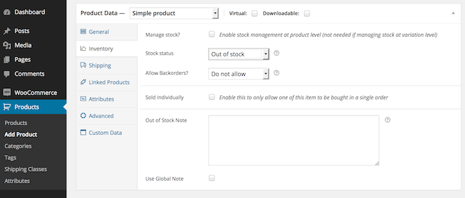

WordPress theme and plugin developer.
I'm available for freelance works.
Hire me here.
Version: 1.0
Created: August 03, 2014
Last Update: August 03, 2014
WordPress Verion: Requires at least v. 3.8
WooCommerce Verion: Requires at least v. 2.1.0
License: GPL v.3 or later
License URI: http://www.gnu.org/licenses/gpl-3.0.html
This plugin allows you to supply a literal message for out of stock products. You can also add links and/or contact info which visitors can get information from. So You'll never lose your potential customers.
It has very easy configuration as follows:
Default Note
If you want to use the default out of stock message, check the "Use Global Note" checkbox.
Product Write Panel
Single Product Page
By default you don't have to modify any code of template file. Because the plugin automatically displays out of stock note right after product title in single product page (as seen above).
If you want to display the out of stock note at other places, use the codes below.
Getting individual note value: get_post_meta($post->ID, '_out_of_stock_note', true);
Getting global note value: get_option('woocommerce_out_of_stock_note');